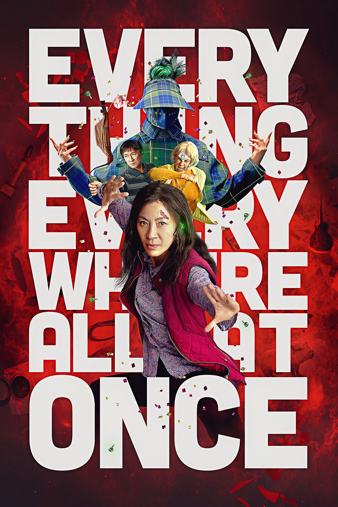

Thoughts on some of the Last Years' Movies According to Chai
Movies with the Biggest Impact both Negative and Positive
Everything Everywhere All at Once

I was absolutely blown away by this movie. I went in not knowing at all what to expect and was whisked away into a world of wonder. The timing of the movie between serious and comical, emotional and lude, was perfection. I could not have predicted the rainbow of emotions that I experienced while viewing this film. The portrayal of an immigrant family and what it's like to grow up in one, trying to just survive and be you - clashing with who your family wants you to be and how your family wants you to succeed. I loved how they wrapped up the movie and I have striven to make the final message of the movie my reality: Be Kind.
The Super Mario Bros. Movie

I went into this movie with high expectations. I watched the trailer well over 200 times. I wanted this movie to speak to my childhood of playing all the nintendo games. I went in thinking the movie would be geared towards us who grew up with Mario, forgetting that there is a whole new generation of kids loving the same characters that I hold dear. The movie was not as serious or epic as I thought it would be, but I can see that it was perfect for this new generation of Super Mario Bros. players. I'll go back and watch it with reduced expectations to see if I like it better. But for now what makes me love this movie is the fact that the new generation of players have a movie meant for them that they love so wholeheartedly.
Teenage Mutant Ninja Turtles: Mutant Mayhem

I didn't grow up with the Teenage Mutant Ninja Turtles, so I didn't go into the movie with any nostalgia from my past or need for the movie to check any specific boxes. When the movie started, the viewers were immediately transported into a lab in New York. The lab was getting raided for its resources and the scene switches to years in the future to the TMNT. From that moment on you are thrust into a charming adventure. You follow the TMNT as they try to find a place in the human world and do whatever they can to make it where they will be welcomed. This movie was packed with humor, full of emotion, and emphasised the beauty that comes from having a family that loves you. This movies is easily one of my favorite movies of all time.
Click for Home Page